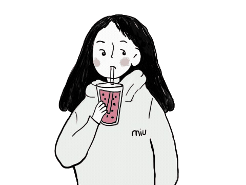
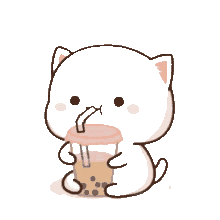

 Minimalism is about portraying how less could be more, it's about elegance and simplicity when it comes in embracing most of the fewer things. This webpage incorporates minimalism and milk tea in one setting. Making milk tea can resemble minimilasim in a sense that milk tea is created from something less yet is made to be more.
 Hello there! I am Rian Luis C. Mabait, a BS in Computer Science freshmen student at the University of the Philippines Visayas. I love cats and minimalistic concepts! If you have any concerns, feel free to contact me at rcmabait@up.edu.ph